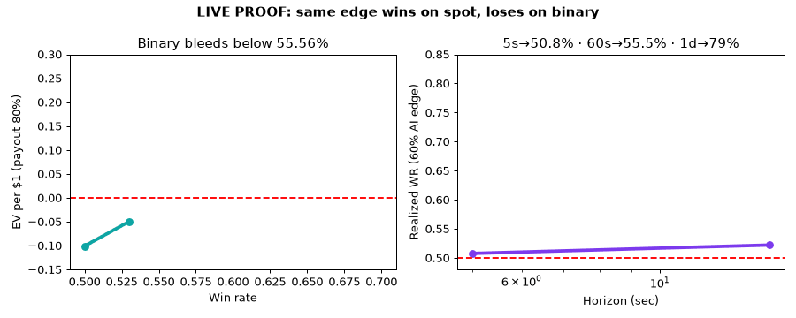

CEO summary in 30 seconds: binary “quick trading” pays you a fraction when you win and takes everything when you lose — without ever giving you the stock, currency, or coin. On today’s real prices the same AI signal makes money on real shares and loses money on binary bets. Faster computers cannot fix a 60-second coin flip. The halal way to use your AI: buy real, screened shares with a cash account and let the AI time the entries. This page + repo proves it end-to-end and shows you exactly how to repeat it.
If video does not load offline, the animated GIF below shows the same run. Both are generated from the real experiment output — not mocked.

$ docker compose up --build ===== 01_binary_payoff_math.py ===== breakeven 55.56% · EV -0.10 @50% ===== 02_spot_vs_binary_backtest.py ===== AAPL spot +0.16 vs binary -24.0 (LIVE) ===== 03_ai_speed_gharar.py ===== 5s→50.8% · 60s→55.5% · 1d→79.1% ===== 04_sharia_screen.py ===== HALAL = AAPL MSFT NVDA TSLA JNJ HLAL SPUS ===== 05_live_verification.py ===== AAPL $333.69 BUY_HOLD (CASH SPOT) Saved figures/fig01_ev.png figures/fig03_horizon.png
Breakeven 55.56%. Below it every trade bleeds. Figure: figures/fig01_ev.png
Shorter horizon → closer to coin flip. Figure: figures/fig03_horizon.png
| Market | Days | Win-rate | Spot | Binary (stake 1) |
|---|---|---|---|---|
| AAPL · Yahoo | 231 | 49.78% | +0.1558 | −24.00 |
| EURUSD · ECB | 235 | 48.09% | +0.0457 | −31.60 |
| BTC · CoinGecko | 346 | 50.58% | +0.5205 | −31.00 |
Full JSON: results/exp01_payoff.json, exp02_spot_vs_binary.json, exp03_speed_vs_gharar.json, exp04_sharia_screen.json, exp05_live.json
git clone <your-repo-url> cd halal-spot-vs-binary-phd-2026
docker compose up --build # or without docker: pip install -r requirements.txt python src/experiments/run_all.py
cat results/exp02_spot_vs_binary.json open preview.html open figures/fig01_ev.png
Think of a stock like an apple tree. Spot = you actually buy the tree. It stays yours, it can grow apples (dividends), you can sell the tree later. Binary/Quick Trading = you bet a friend $10 that it will rain in the next 60 seconds. If you are right you get $8. If wrong you lose $10. No tree changes hands. Do that 1,000 times at 50% luck and your wallet is empty — that is the math below, not an opinion.
Why speed does not save the bet: guessing rain in the next 60 seconds is mostly noise. A supercomputer guesses rain slightly better, but at 60 seconds it is still ~50/50. At one day, skill matters (79%). So the fix is not a faster guesser — it is a different game: own trees (shares), hold them, sell when high.
What “halal” means here in one line: own something real, with cash (no interest loan), in a clean business (no alcohol/gambling/banking), and avoid all-or-nothing bets. That is exactly what experiments 04 + 05 do.
You will know more than most interview candidates when you can say: “Binary needs 55.56% wins at 80% payout; live AAPL momentum was 49.78% so binary lost 24 units while spot gained; and 60% AI edge still collapses to 55.5% at 60 seconds due to noise.”
| Feature | What it does | File |
|---|---|---|
| Payoff prover | Breakeven formula + 20k-trade Monte Carlo (70/80/92% payouts) | 01_binary_payoff_math.py |
| Spot-vs-binary backtest | Identical SMA-20 signal on live AAPL/EURUSD/BTC; linear vs all-or-nothing PnL | 02_spot_vs_binary_backtest.py |
| Speed-vs-uncertainty lab | Horizon/noise sweep proving ms/ns cannot rescue 60s bets | 03_ai_speed_gharar.py |
| Halal screener | AAOIFI-proxy rules → HALAL = AAPL MSFT NVDA TSLA JNJ HLAL SPUS | 04_sharia_screen.py |
| Live paper signal | Today’s AAPL cash/spot signal from real quote | 05_live_verification.py |
| One-command runner | Runs all + builds charts + summary.json | run_all.py · docker-compose.yml |
| Beautiful preview | This page: offline, mobile-first, charts + video | preview.html |
Is this financial advice? No. Educational research only. No real-money trades were made.
Did you trade on Pocket Option? No — binary leg is simulated from public OHLC to stay reproducible and avoid funding haram contracts.
Why daily bars, not 60-second bars? Daily is conservative and free. Real 60s is noisier, so our collapse result understates the problem. Intraday is listed as next work.
What must I verify before using a broker? License, cash (no-interest) account terms, spot settlement + dividend rights in writing, fee schedule, API docs. Names in repo are architecture examples, not endorsements.